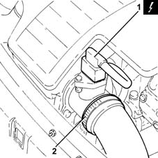
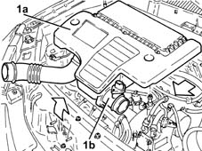
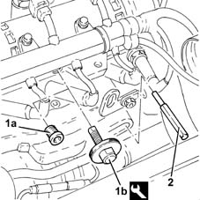
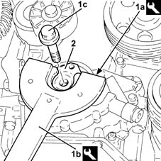
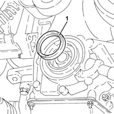
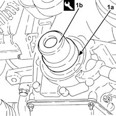
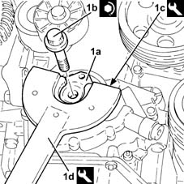

1020B30 timing system cover oil seal - replace
- Path
- Procedures > 10 ENGINE > 1020 CRANKCASE SUMP AND COVERS > 1020B timing system oil seal covers > 1020B30 timing system cover oil seal - replace
- Kind
- repair procedure (removal / refitting; the operation number is the code)
- Applies to
- engines: 1.3 JTD; all production periods
- Interactive page
- https://sloeber94.github.io/elrnDB-lYpsln/en/#/2429009
Applies to: engines: 1.3 JTD; all production periods
 Removing
Removing
 Refitting
RefittingPosition the vehicle on the ramp.
Ensure that the ignition key is in OFF position, then disconnect the battery negative terminal (-).
 | Name | Connector |
|---|---|---|
- | Battery |
1. Disconnect the electrical connection from the air flow meter.
| Name | Connector |
|---|---|---|
1 | Air flow meter |
2. Loosen the band and disconnect the the turbocharger air inlet sleeve from the rigid pipe, air flow meter side.

Applies to: engines: 1.3 JTD; all production periods
1. Remove the air filter (1a) complete with air flow meter (1b) by releasing from the underlying pins and then from the rear fastenings.

Applies to: engines: 1.3 JTD; all production periods
1. Remove the plug (1a) and, in its place, fit the tool (1b) on the exhaust side camshaft.
 | Name | Country |
|---|---|---|
1b | Template | 1.871.000.900 |
2. Fit a suitable (8 mm diameter) pin via the special opening in the gearbox.

Applies to: engines: 1.3 JTD; all production periods
Proceed with removal 4450B04 right front wheel r r .
Proceed with removal 7055B66 Engine compartment DUST SHIELD protection in right front wheel arch - R.R. .
Proceed with removal 7055B91 Right front WHEEL ARCH LINER - R.R. .
Proceed with removal 1092G10 single engine belt r r .
Proceed with removal 1092A10 Crankshaft services PULLEY - R.R. .
1. Using tools (1a) and (1b) for counter-torque, undo the left hand bolt (1c) fixing the pulley support flange to the crankshaft.
| Name | Country |
|---|---|---|
1a | Counter-torque | 1.871.000.200 |
| Name | Country |
|---|---|---|
1b | Support for counter-torque | 1.860.831.000 |
2. Remove the pulley flange on the crankshaft.

Applies to: engines: 1.3 JTD; all production periods
1. Remove the crankshaft front oil seal from the timing cover.

Applies to: engines: 1.3 JTD; all production periods
Refitting
Removing1. Fit a new crankshaft front oil seal (1a) in the housing in the timing cover using the tool (1b).
| Name | Country |
|---|---|---|
1b | Fitting tool | 1.860.878.000 |

Applies to: engines: 1.3 JTD; all production periods
1. Place the pulley support flange in position on the crankshaft (1a) and tighten the left hand bolt (1b) to the recommended torque using tools (1c) and (1d) for counter-torque.
 | Fastening | Component | Ø | Value (daNm) |
|---|---|---|---|---|
1b | Left hand thread bolt | PULLEY SUPPORT FLANGE ON CRANKSHAFT | M14 | (Crankshaft side) 21.9 ÷ 24.2 |
| Name | Country |
|---|---|---|
1c | Counter-torque | 1.871.000.200 |
| Name | Country |
|---|---|---|
1d | Support for counter-torque | 1.860.831.000 |

Applies to: engines: 1.3 JTD; all production periods
Proceed with refitting 1092A10 Crankshaft services PULLEY - R.R. .
Proceed with refitting 1092G10 single engine belt r r .
Proceed with refitting 7055B91 Right front WHEEL ARCH LINER - R.R. .
Proceed with refitting 7055B66 Engine compartment DUST SHIELD protection in right front wheel arch - R.R. .
Proceed with refitting 4450B04 right front wheel r r .
Remove the pin from the hole on the gearbox.
Remove the tool for timing the exhaust side camshaft and tighten the plug.
| Name | Country |
|---|---|---|
- | Template | 1.871.000.900 |
Replace the air filter, complete with air flow meter, in its housing.
Connect the air intake sleeve to the turbocharger, air flow meter side, and tighten the band.
Connect the electrical connection to the air flow meter.
Connect the negative (-) battery terminal.
Remove the car from the ramps.